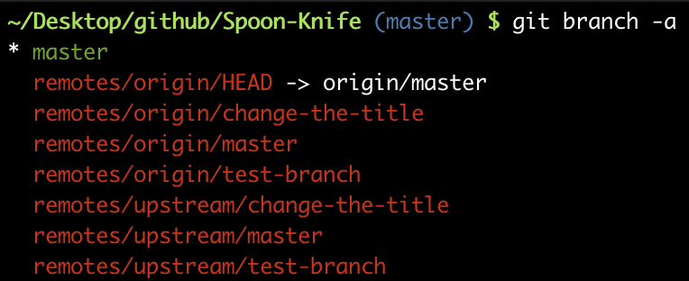

[ Book Review ] Github実践入門
GitHub は以前から使っていて簡単な操作はできていたが ( このサイトも GitHub pages で制作している ), インターン先でグループで開発する可能性があるので,GitHub を用いた共同開発の仕方について勉強することにした.
今回読んだのは「GitHub 実践入門」 ( Amazon , 技術評論社 ) という本.
少し情報が古く GitHub のページが所々変わっているところもあったが,基本的なことは変化していないので全体を通して曖昧な理解のままだったブランチの操作や pull request ( 以下PR ) の仕方,共同開発の流れがまとまって書いてあり,参考になることが多かった.
なかなか他人のプロダクトに PR を送るのは気が引けるが,この本では PR を実際に用意されたレポジトリに送ることができるので, 実際の流れをデモンストレーションできる.
hub コマンドや,git-flow はまだうまく使いこなせないかもしれないが,git-flow を用いて少人数開発をする時のサイクルを理解できたのはよかった.
Gist 等のサービスも利用していなかったので,これから使っていこうと思う.( 本書では量の多いログなどを見てもらう時に使ったりできると書いてあった. )
おまけ: 本書には載っていなかった事柄をメモ
-
git branch --vv: ローカルブランチとリモート追跡ブランチの関係を確認. -
ターミナルでプロンプトに現在のブランチを表示させるといちいちコマンドで確認しなくて済む. 
-
バージョンが更新されたので,
git checkoutだけでなくgit switchとgit restoreも使えると良い.
Hiroaki Yamagiwa
Undergraduate
My research interests include machine learning and Natural Language Processing.